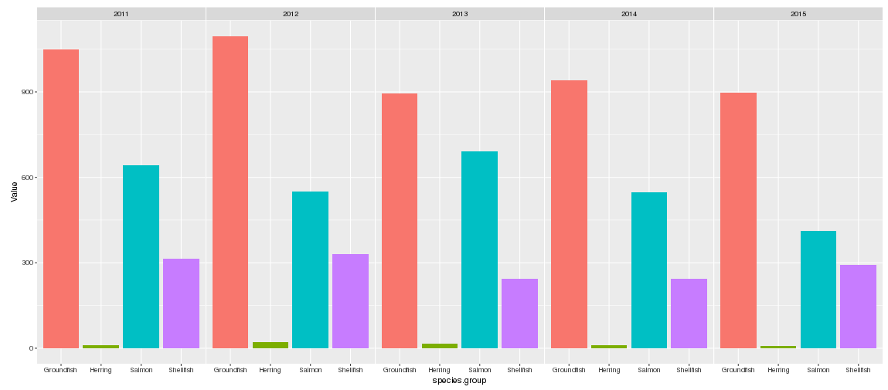

Economic Status of the Groundfish Fisheries off Alaska Data Visualizations

Ben Fissel, Alaska Fisheries Science Center
Ben.Fissel@noaa.gov 2 2 MAY 2019 10.28966/PSESV.2018.002
Visualization of selected ex-vessel, first-wholesale, and effort statistics from the Groundfish Economic SAFE report
groundfish, Eastern Bering Sea, Gulf of Alaska, Aleutian Islands, seafood production, seafood harvest, fishing effort
Methods